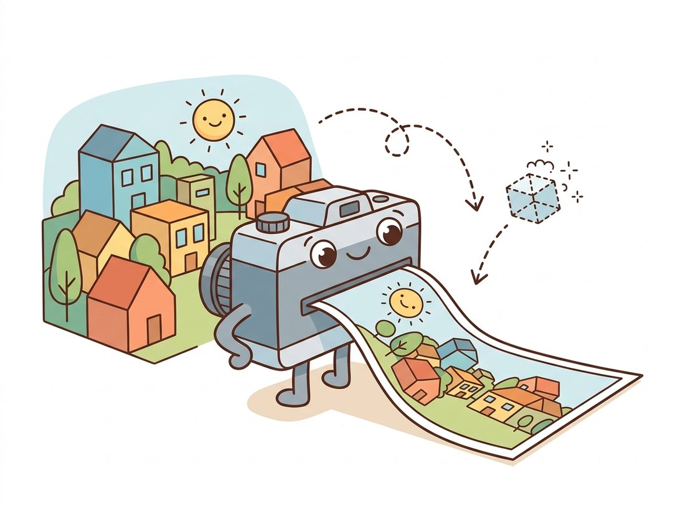
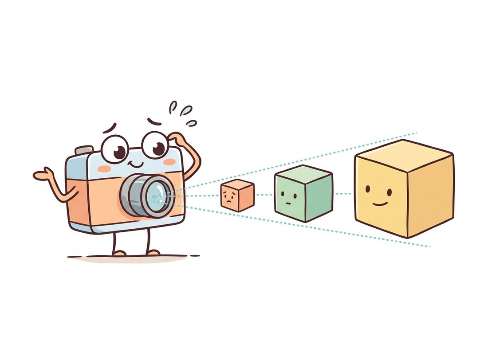

"I flattened the entire three-dimensional world onto a rectangle for you. The depth? Threw it away. You never said you wanted to keep it."
A Pinhole Camera With No Lens and No Regrets
A camera is a machine for throwing away a dimension, and the pinhole model describes exactly how: every 3D point slides along a straight ray through a single center of projection and lands on a 2D plane, with the intrinsic matrix $K$ as the five-number summary of where it lands for your specific camera. Everything geometric that the rest of Part II does, measuring depth from two views, recovering structure from motion, tracking a camera through a building, rests on this one model. Get comfortable with $K$ now: it is the passport every pixel needs before it is allowed to talk about the 3D world.
The previous chapters of this Part treated the image as a self-contained 2D world: Chapter 11 carved it into regions, Chapter 10 found points that match across images. This section asks the question both of them postponed: where did the image come from in the first place? The answer is a geometric model of image formation, and the simplest model that works astonishingly well is the pinhole camera. We will build it from a single similar-triangles argument, package it as a matrix using the homogeneous coordinates you met in Chapter 5, and dissect the intrinsic parameters that make your camera different from mine. The illustration below captures the bargain at the heart of it all.

1. The Pinhole: Geometry's Simplest Camera Basic
Poke a tiny hole in one wall of a dark box and the opposite wall displays an inverted image of the scene outside. This camera obscura, known to Mozi in the fourth century BCE and to every child with a shoebox, works because the hole admits exactly one ray from each scene point. Geometry does the rest. Place the origin of a 3D coordinate system at the hole (the optical center or center of projection), point the $Z$ axis out into the scene (the optical axis), and put the image plane a distance $f$ (the focal length) behind the hole. A scene point $P = (X, Y, Z)$ projects to the image point where its ray crosses the plane, and similar triangles give the coordinates directly:
$$x = f\,\frac{X}{Z}, \qquad y = f\,\frac{Y}{Z}.$$
That is the entire model. The division by $Z$ is perspective projection: distant objects ($Z$ large) project small, near objects project large, and parallel lines in the scene meet at vanishing points in the image. Because the physical image behind the hole is inverted, it is conventional (and mathematically identical) to reason about a virtual image plane placed at $+f$ in front of the optical center, where the image appears upright. Figure 12.1.1 draws both planes and the similar triangles that produce the formula.
Real cameras replace the pinhole with a lens, because a pinhole small enough to give a sharp image admits almost no light. The lens gathers a bundle of rays and focuses them, which buys brightness at the cost of focus limits and the distortions of Section 12.2. But to first order, a focused lens behaves exactly like a pinhole at its optical center, which is why this idealized model carries the entire edifice of multi-view geometry.
2. Homogeneous Coordinates Make Projection Linear Intermediate
The division by $Z$ makes perspective projection nonlinear in ordinary coordinates, which would condemn us to clumsy algebra for the rest of the book. The fix is the same one Chapter 5 used to turn translations and homographies into matrix multiplications: homogeneous coordinates. Represent the image point as a 3-vector $(u, v, 1)$ defined only up to scale, and projection becomes a single linear map followed by a normalization:
$$\lambda \begin{bmatrix} u \\ v \\ 1 \end{bmatrix} = \underbrace{\begin{bmatrix} f_x & s & c_x \\ 0 & f_y & c_y \\ 0 & 0 & 1 \end{bmatrix}}_{K} \begin{bmatrix} X \\ Y \\ Z \end{bmatrix}, \qquad \lambda = Z.$$
The matrix $K$ is the intrinsic matrix (also called the camera matrix), and the scalar $\lambda$ absorbs the perspective divide: multiply out the right side, then divide by the third component to get pixel coordinates. To see that this is the same model and not a new one, take the simplest case $s = 0$, $c_x = c_y = 0$: the product gives $(f_x X,\, f_y Y,\, Z)$, and dividing by that third component $Z$ returns $u = f_x X / Z$, exactly the similar-triangles formula from above with $f_x$ playing the role of $f$. The matrix has just bundled the same divide into a form we can chain with other matrices. When the 3D point is expressed in a world coordinate system rather than the camera's own, a rigid transform $[R\,|\,t]$ maps world to camera coordinates first, giving the full projection matrix $P = K[R\,|\,t]$. The rotation and translation are the extrinsic parameters, and they get their own treatment in Section 12.4; this section keeps the world glued to the camera so we can stare at $K$ alone.
Filippo Brunelleschi demonstrated geometric perspective around 1415 using a painted panel of the Florence Baptistery, a mirror, and a peephole, effectively building a pinhole verification rig for his own painting. The mathematics of vanishing points that he and Alberti worked out is exactly the projective geometry inside $K[R\,|\,t]$. Computer vision is, in this sense, inverse Renaissance painting: they projected the world onto canvas, we recover the world from the canvas.
3. Anatomy of the Intrinsic Matrix Intermediate
Each entry of $K$ answers a concrete physical question about how the sensor digitizes the focused image:
- $f_x, f_y$, focal lengths in pixels. The physical focal length $f$ (millimeters) divided by the pixel pitch (millimeters per pixel) along each axis: $f_x = f / \rho_x$, $f_y = f / \rho_y$. On modern sensors with square pixels, $f_x \approx f_y$; a meaningful difference usually signals anamorphic optics, non-square binning, or a calibration problem.
- $c_x, c_y$, the principal point. The pixel where the optical axis pierces the sensor. Nominally the image center, but lens mounts and sensor placement are imperfect; a few dozen pixels of offset is routine and matters for accurate geometry.
- $s$, the skew. Nonzero only if pixel rows and columns are not perpendicular. For every digital sensor you will ever calibrate, $s = 0$, and OpenCV fixes it to zero by default. It survives in the math because the algebra of Section 12.3 is cleaner with it present.
Seeing two entries $f_x$ and $f_y$ in $K$, learners often conclude the camera has two physical focal lengths, or that $f_x$ is the focal length in millimeters printed on the lens. Neither is true. A lens has one physical focal length $f$ in millimeters; $f_x$ and $f_y$ are that single $f$ expressed in pixels along each axis, $f_x = f / \rho_x$ and $f_y = f / \rho_y$, so they differ only when the pixel pitch differs between the horizontal and vertical directions (non-square pixels or anamorphic optics). On the square-pixel sensors you will calibrate, $f_x \approx f_y$ not because the optics enforce it but because $\rho_x \approx \rho_y$. The practical consequence: an 8 mm lens does not give $f_x = 8$; you must divide by the pixel pitch first, which is exactly the conversion the field-of-view code below performs, and getting it wrong is how a measurement system ends up off by a factor of the pitch.
Notice what is not in $K$: nothing about position or orientation (that is extrinsic), and nothing about lens distortion (that is the polynomial bolted on in Section 12.2). $K$ is purely the linear part of the sensor's view of the world. The code below builds a $K$ for a 1080p camera and projects the eight corners of a cube by hand, so you can watch the perspective divide do its work; this ten-line loop is the computational heart of every renderer and every reprojection error in this book.
# Build a 1080p intrinsic matrix K by hand, then project a cube's eight
# corners with an explicit perspective divide. No rotation or distortion yet:
# this isolates K so the foreshortening from the Z-divide is visible alone.
import numpy as np
fx, fy = 1480.0, 1480.0 # focal lengths in pixels
cx, cy = 960.0, 540.0 # principal point (image center of 1920x1080)
K = np.array([[fx, 0., cx],
[0., fy, cy],
[0., 0., 1.]])
# Eight corners of a 20 cm cube centered 1.5 m in front of the camera (meters).
cube = np.array([[x, y, z] for x in (-0.1, 0.1)
for y in (-0.1, 0.1)
for z in (1.4, 1.6)])
proj = (K @ cube.T).T # rows are [Z*u, Z*v, Z]
pixels = proj[:, :2] / proj[:, 2:] # the perspective divide
for P, p in zip(cube, pixels):
print(f"({P[0]:+.2f}, {P[1]:+.2f}, {P[2]:.1f}) m -> ({p[0]:6.1f}, {p[1]:6.1f}) px")
# (-0.10, -0.10, 1.4) m -> ( 854.3, 434.3) px
# (-0.10, -0.10, 1.6) m -> ( 867.5, 447.5) px
# (-0.10, +0.10, 1.4) m -> ( 854.3, 645.7) px
# (-0.10, +0.10, 1.6) m -> ( 867.5, 632.5) px
# (+0.10, -0.10, 1.4) m -> (1065.7, 434.3) px
# (+0.10, -0.10, 1.6) m -> (1052.5, 447.5) px
# (+0.10, +0.10, 1.4) m -> (1065.7, 645.7) px
# (+0.10, +0.10, 1.6) m -> (1052.5, 632.5) pxK @ cube.T product gives homogeneous rows [Z*u, Z*v, Z], and dividing by the third column performs the perspective divide. The near face ($Z = 1.4$ m) spans 211 pixels while the far face ($Z = 1.6$ m) spans 185, the foreshortening a drawing teacher would demand.Read the output closely and the model's behavior becomes tangible. The near face of the cube projects wider apart than the far face, so the wireframe would draw as a proper perspective cube, with the side faces converging toward a vanishing point. Doubling $f_x$ would double every offset from the principal point, magnifying the image: focal length is zoom, expressed in pixels.
Run the cube-projection snippet above, then re-run it three times with fx, fy set to 740, 1480, and 2960 (halving, then doubling). Watch how every projected pixel's distance from the principal point $(960, 540)$ scales with the same factor: at 740 the cube shrinks toward the image center, at 2960 it spreads toward the edges and may run off-frame. Two things to notice. The depth gap between the near and far faces stays a fixed ratio, not a fixed pixel count, because perspective foreshortening comes from the $Z$-divide, not from $f_x$. And nothing about the scene moved; only the single number $f_x$ changed, which is precisely what optical zoom does and why it is one entry in $K$, not a property of the world.
The manual projection above ignores rotation, translation, and lens distortion. Handling all three correctly, plus the Jacobians that calibration needs, is about 60 lines of careful NumPy. OpenCV does it in one call:
# Reproduce the manual projection with cv2.projectPoints, which folds
# rotation, translation, distortion, and the perspective divide into one call.
# Zero rvec/tvec/dist make it equivalent to the hand-built loop above.
import cv2
import numpy as np
rvec = np.zeros(3) # rotation (Rodrigues vector), Section 12.4
tvec = np.zeros(3) # translation: world frame = camera frame here
dist = np.zeros(5) # distortion coefficients, Section 12.2
pix, jac = cv2.projectPoints(cube.astype(np.float32), rvec, tvec, K, dist)
print(pix.reshape(-1, 2)[0]) # -> [854.3 434.3], matching the manual loopcv2.projectPoints, replacing roughly 60 lines of NumPy. The function reproduces the first cube corner [854.3, 434.3] from the manual loop while also handling rotation, translation, and the distortion polynomial that the by-hand version ignored.That is a 60-to-1 line reduction. Internally the function converts the Rodrigues rotation vector to a matrix, applies the rigid transform, performs the perspective divide, runs the full distortion polynomial, maps through $K$, and (optionally) returns the analytic Jacobian with respect to every parameter, the gradient machinery that powers the calibration optimizer in Section 12.3.
4. Focal Length, Field of View & What "Zoom" Means Basic
Photographers speak in millimeters, vision engineers in pixels, and product datasheets in "degrees of field of view (FOV)". One formula connects all three. A sensor of width $W$ pixels with focal length $f_x$ pixels sees a horizontal angle
$$\theta_{\text{FOV}} = 2\,\arctan\!\left(\frac{W}{2 f_x}\right).$$
Longer focal length means narrower angle means more magnification: that is all optical zoom is. The spread is dramatic on one and the same full-frame sensor: a 14 mm ultra-wide lens drinks in about 104 degrees horizontally, a 50 mm "normal" lens about 40 degrees, and a 200 mm telephoto barely 10 degrees, a tenfold swing in the slice of world that lands on identical silicon, purely from the focal-length number in $K$. Digital zoom is simply cropping, which leaves $f_x$ alone but reduces $W$, narrowing the field of view while spending the same pixels on less scene. The conversion from a lens spec to $f_x$ runs through the pixel pitch, as the snippet below shows for a classic full-frame setup; the printed angles match what any lens manufacturer's table lists for a 50 mm lens.
# Convert a photographer's lens spec into the vision engineer's units: a
# physical focal length in millimeters becomes f_x in pixels via the pixel
# pitch, and the FOV formula turns f_x and sensor size into an angle.
import numpy as np
def fov_deg(focal_px, size_px):
return np.degrees(2 * np.arctan(size_px / (2 * focal_px)))
# A 50 mm lens on a full-frame (36 x 24 mm) sensor digitized at 6000 x 4000.
pixel_pitch = 36 / 6000 # 0.006 mm per pixel
fx = 50 / pixel_pitch # focal length converted to pixels
print(f"fx = {fx:.1f} px")
print(f"horizontal FOV = {fov_deg(fx, 6000):.1f} deg")
print(f"vertical FOV = {fov_deg(fx, 4000):.1f} deg")
# fx = 8333.3 px
# horizontal FOV = 39.6 deg
# vertical FOV = 27.0 degfov_deg. The computed 39.6 degree horizontal angle matches any lens manufacturer's table; the same lens on a smaller sensor (or a center crop) yields a narrower field of view with no change in optics.A warning that saves real grief: the focal length printed on the lens barrel is a nominal, rounded value, and the effective focal length changes with focus distance (an effect called focus breathing). For any application where pixels are measurements, the spec sheet is a starting guess, never a substitute for the calibration of Section 12.3. The practical example below is one of the countless ways this lesson gets relearned in industry.
Who and what. A logistics startup built a dimensioning station: a single downward-looking 4K camera over a conveyor measures each parcel's footprint (length and width) so freight charges can be computed automatically. Height came from a separate ultrasonic sensor, so the camera only needed the pinhole model: footprint size in pixels, times $Z/f_x$, gives size in meters.
The problem. In pilot deployment, boxes measured consistently 8 to 10% larger than their true size, enough to overcharge customers and trigger disputes. The code was reviewed three times; the geometry was right.
The decision. An engineer finally questioned the constants: the team had computed $f_x$ from the lens spec (8 mm) and the sensor datasheet pitch. A twenty-minute checkerboard calibration measured the actual $f_x$ at 4.6% below the nominal value (focus breathing at the short working distance accounted for most of it), and found the principal point 31 pixels off center, which biased measurements differently across the belt.
The result and the lesson. With calibrated intrinsics the error fell below 0.8%, within billing tolerance. The lesson the team wrote on the wall: spec sheets describe the lens family; calibration describes your camera. Every formula in this section is only as accurate as the $K$ you feed it.
5. Back-Projection: Every Pixel Is a Ray Intermediate
Projection runs forward, from 3D to 2D, and loses information on the way. Run it backward and you discover precisely what was lost. Given a pixel $(u, v)$ and the intrinsic matrix, you can undo the linear part:
$$\mathbf{d} = K^{-1}\begin{bmatrix} u \\ v \\ 1 \end{bmatrix} = \begin{bmatrix} (u - c_x)/f_x \\ (v - c_y)/f_y \\ 1 \end{bmatrix},$$
where the right-hand side just reverses what $K$ did to a point: subtract the principal point, then divide by the focal length, putting the pixel back into the normalized units it had before $K$ stretched and shifted it. But the result $\mathbf{d}$ is not a point, it is a direction. Every 3D point of the form $Z \cdot \mathbf{d}$ for any depth $Z > 0$ projects to exactly the same pixel. A pixel is not a point in the world; a pixel is a ray, and the camera cannot tell you where along the ray the surface was. The illustration below makes the confusion vivid, and the three-line computation that follows makes it concrete.

# Back-project one pixel into its viewing ray by applying K-inverse, then walk
# along the ray at several depths. Every point Z*d projects to the same pixel,
# which is why a single image cannot tell scale from distance.
u, v = 1065.7, 645.7 # a pixel from the cube projection above
d = np.linalg.inv(K) @ np.array([u, v, 1.0])
for Z in (1.4, 2.8, 14.0): # three depths along the same ray
print(f"Z = {Z:4.1f} m -> 3D point {np.round(Z * d, 3)}")
# Z = 1.4 m -> 3D point [0.1 0.1 1.4 ]
# Z = 2.8 m -> 3D point [0.2 0.2 2.8 ]
# Z = 14.0 m -> 3D point [1. 1. 14. ]np.linalg.inv(K), then sampling depths Z along it. A 20 cm cube at 1.4 m, a 40 cm cube at 2.8 m, and a 2 m cube at 14 m all produce the identical pixel: scale and depth are perfectly confounded in a single view.The perspective divide $u = f_x X / Z + c_x$ maps the whole ray $\{Z\mathbf{d}\}$ to one pixel, so a single image determines 3D structure only up to an unknown depth per pixel. This is not a flaw to engineer around; it is the organizing principle of the next three chapters. Chapter 13 restores depth by intersecting rays from two cameras, and Chapter 14 does it from many views of a moving camera. Every one of those methods needs $K$ first, because $K$ is what turns a pixel into a metrically meaningful ray. Calibration is not a preprocessing chore; it is the act of giving your pixels geometry.
This ray picture also explains why intrinsics and extrinsics are kept separate. $K$ converts pixels to rays in the camera's coordinate frame, a property of the physical device that survives any motion. The extrinsics of Section 12.4 then place that bundle of rays somewhere in the world. Calibrate once, move freely: the factorization $P = K[R\,|\,t]$ is what makes that economy possible.
A vigorous 2024 to 2026 research line asks whether $K$ can be inferred from image content alone. GeoCalib (Veicht et al., ECCV 2024, arXiv:2409.06704) trains a network that extracts focal length, horizon, and distortion from a single image by embedding the perspective geometry of this section into a differentiable optimizer. The pointmap models DUSt3R (Wang et al., CVPR 2024, arXiv:2312.14132) and its successor MASt3R sidestep explicit calibration entirely, regressing 3D points per pixel and recovering a compatible $K$ afterward, and VGGT (CVPR 2025, arXiv:2503.11651) predicts intrinsics, extrinsics, and depth for hundreds of frames in one transformer forward pass. Notably, all of these methods still output pinhole parameters: the centuries-old model survives as the interface, and the learned scene representations of Chapter 27 consume the very $K$ and poses this chapter teaches you to measure.
(a) Using the projection equations, show algebraically that scaling an entire scene by a factor $s$ (every point $P \mapsto sP$) produces an identical image. (b) A movie studio films a 1:20 scale model of a city street. Where must the camera be placed, relative to filming the real street, for the images to match, and what happens to the focal length? (c) Name one physical cue (not geometric projection) that can still betray the miniature, and relate it to why single-image depth networks in Chapter 27 can only ever estimate depth up to scale unless trained with metric supervision.
Extend the cube-projection code into a tiny renderer: project the 8 corners, then draw the 12 edges with matplotlib (or cv2.line on a blank image). Animate $f_x$ from 500 to 3000 pixels while simultaneously moving the cube away so its image height stays constant (the dolly-zoom). Describe what happens to the convergence of the cube's side edges, and explain it using the FOV formula from this section.
Find the datasheet of any webcam or phone camera you own (sensor size, resolution, nominal focal length or "equivalent focal length"). (a) Compute the implied $f_x$ in pixels and the horizontal FOV. (b) Photograph an object of known width at a measured distance, measure its width in pixels, and solve the pinhole equation for $f_x$. (c) Quantify the disagreement between (a) and (b) in percent, list at least three physical causes from this section that could explain it, and state which of them the calibration procedure of Section 12.3 will and will not fix.